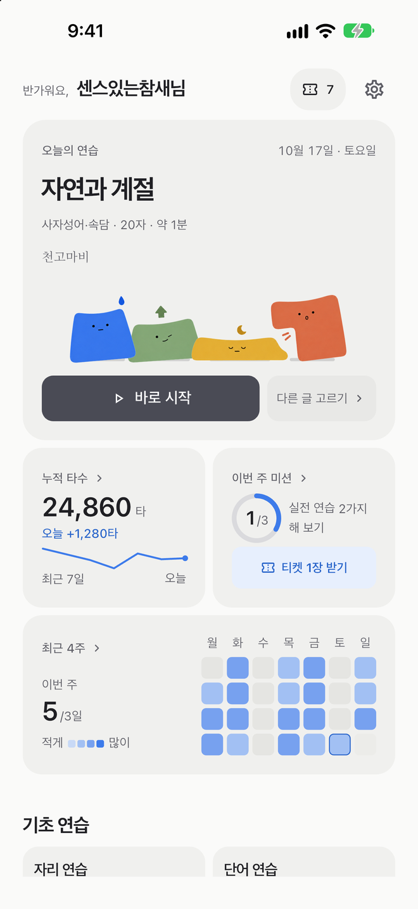
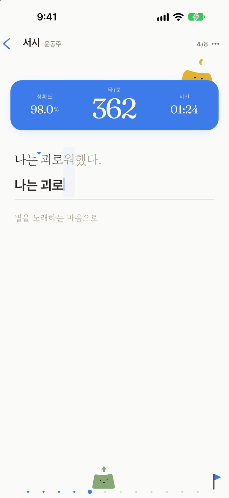
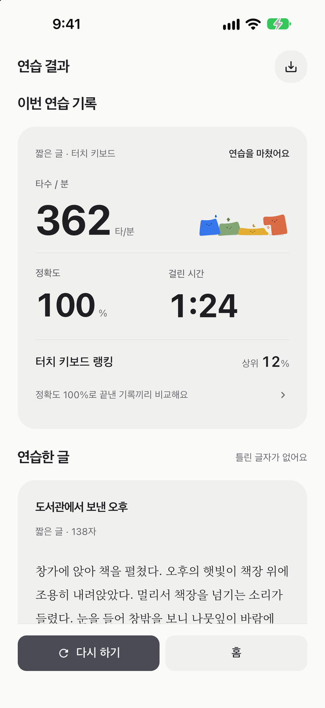

자리 연습 · 낱말 연습
기본 키 위치와 낱말부터 짧은 글·긴 글까지.
한글과 영문 모두 지원합니다.
OMILSOFT / TADAK
타닥타닥
모바일에서 시작하는 한글·영문 타자 연습.
기본 자리부터 긴 글까지, 나의 속도로 연습하세요.
iOS · Android / 무료 다운로드

01 / TRY TADAK
아래 문장을 입력해보세요. 휴대폰 키보드로도 연습할 수 있습니다.
연습 문장: 하늘이 맑은 날에는 산책을 하고 싶어요.
입력란을 눌러 시작하세요. 틀린 글자는 밑줄로 표시됩니다.
연습을 마쳤어요.
0 CPM
0% 정확도
앱에서 더 많은 글을 연습해보세요.
02 / PRACTICE
자리·낱말 연습부터 짧은 글·긴 글, 모두의 공간 커뮤니티까지 하나의 앱에서.
기본 키 위치와 낱말부터 짧은 글·긴 글까지.
한글과 영문 모두 지원합니다.
매일 연습 알림과 연속 연습 표시로 꾸준히 연습하세요.
터치·외부 키보드를 구분한 주간 순위와 나의 기록에서 속도 변화, 자주 틀리는 글자를 확인하세요.
모두의 공간에서 인기·추천 글로 연습하고 친구 챌린지 링크를 공유하세요.
메신저·이메일·속담·사전·위키·성경 모드, 무료 공개 저작물 기반 고전 필사와 AI 글쓰기도 만나보세요.


03 / GUIDE
PC 없이도 스마트폰에서 한글·영문 타자 연습을 할 수 있습니다. 자리·낱말 연습과 짧은 글·긴 글 연습을 지원하며, 터치 키보드나 외부 키보드로 연습할 수 있습니다.
iOS와 Android 모두 지원합니다. 스마트폰의 터치 키보드와 블루투스 외부 키보드로 연습할 수 있습니다.
매일 연습 알림과 연속 연습 표시로 연습을 이어가세요. 터치 키보드와 외부 키보드를 구분한 주간 순위를 확인하고, 나의 기록에서 속도 변화와 자주 틀리는 글자를 살펴볼 수 있습니다.
앱은 무료로 다운로드할 수 있으며, 저작권이 만료된 공개 저작물로 고전 필사를 무료로 연습할 수 있습니다.
TADAK / DOWNLOAD
타닥타닥 · 한글·영문 타자 연습
지원 및 문의